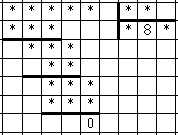

Restore the numbers. Restore the digits in the following example by dividing as is shown in the image
When multiplying the divisor by 8, we get a two-digit number. This means that the divisor does not exceed 12, because 13 × 8 = 104 is a three-digit number. If the divisor is multiplied by the first or last digit of the quotient $($which is greater than 8$)$, we get a three-digit number, hence the divisor is 12. So, 12 × 989 = 11868.
11868/12 = 989.